1076B10 EXHAUST PIPE ASSEMBLY - R + R
- Path
- Procedures > 10 ENGINE > 1076 EXHAUST PIPES AND SILENCERS > 1076B EXHAUST PIPES AND SILENCERS > 1076B10 EXHAUST PIPE ASSEMBLY - R + R
- Kind
- repair procedure (removal / refitting; the operation number is the code)
- Applies to
- engines: 1.8, 2.2; all production periods
- Interactive page
- https://sloeber94.github.io/elrnDB-fCrm/en/#/194000362
Applies to: engines: 2.2; all production periods
 Removing
Removing
 Refitting
Refitting- Position the vehicle on a lift.
- Make sure that the ignition key is in the OFF position, then disconnect the battery terminal (-).
Description | Connector | |
|---|---|---|
- | Battery |
1. Remove the sound insulation cover fastened to the engine by three pins.
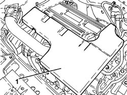
Applies to: engines: 2.2; all production periods
1. Disconnect the electrical connection for the front Lambda sensor to the catalytic converter.
Description | Connector | |
|---|---|---|
1 | Lambda sensor on catalyzer |
2. Disconnect the electrical connection for the rear Lambda sensor to the catalytic converter.
Description | Connector | |
|---|---|---|
2 | Lambda sensor on catalyzer - 2 |
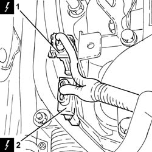
Applies to: engines: 2.2; all production periods
1. Undo and remove the front Lambda sensor on the catalytic converter.
2. Undo the bolts (2a) and remove the heat shield (2b).
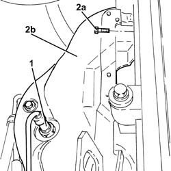
Applies to: engines: 2.2; all production periods
1. Undo the nuts (1a) and disconnect the front section of the exhaust pipe (1b) exhaust manifold side with catalytic converter.
2. Remove the gasket.
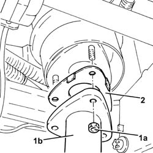
Applies to: engines: 2.2; all production periods
1. Undo the nuts (1a) and remove the exhaust manifold and catalytic converter (1b).
- Remove the gasket.
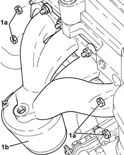
Applies to: engines: 2.2; all production periods
1. Release the rigid pipe for the exhaust pipe between the catalytic converter and the silencer from the flexible mountings.
2. Loosen the collar fixing the rigid pipe for the exhaust pipe between the catalytic converter and the silencer, front exhaust silencer side.
3. Remove the rigid pipe for the exhaust pipe between the catalytic converter and the silencer (3a) complete with rear Lambda sensor on the catalytic converter (3b).
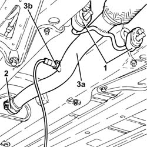
Applies to: engines: 2.2; all production periods
1. Release the front exhaust silencer from the front flexible mounting.
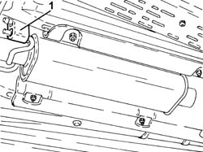
Applies to: engines: 2.2; all production periods
1. Release the front exhaust silencer from the rear flexible mounting.
2. Loosen the collar securing the front exhaust silencer to the rear exhaust silencer.
3. Remove the front exhaust silencer.
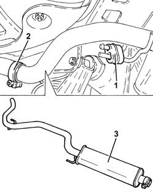
Applies to: engines: 2.2; all production periods
1. Remove the rear exhaust silencer (1a) releasing it from the flexible supports (1b) and the front exhaust silencer.
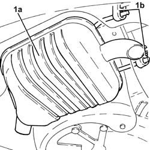
Applies to: engines: 2.2; all production periods
Refitting
Removing- Place the rear exhaust silencer in its housing and secure to the flexible supports.
- Place the front exhaust silencer back in its housing.
- Tighten the collar securing the front exhaust silencer to the rear exhaust silencer.
- Fasten the front exhaust silencer to the rear flexible mounting.
- Place the rigid pipe for the exhaust pipe between the catalytic converter and the silencer complete with rear Lambda sensor back in its housing.
- Tighten the collar fixing the rigid pipe for the exhaust pipe between the catalytic converter and the silencer, front exhaust silencer side.
- Fasten the rigid pipe for the exhaust pipe between the catalytic converter and the silencer to the flexible mountings.
- Place a new gasket back in position.
1. Place the exhaust manifold (1a) in its housing and secure it by tightening the new nuts (1b) to the recommended torque.
Component | Fastening | dia | Value (daNm) | Validity |
|---|---|---|---|---|
Exhaust manifold with catalytic converter | Nut (to replace) | - | (cylinder head side) 2.0 | 1.8 2.2 |
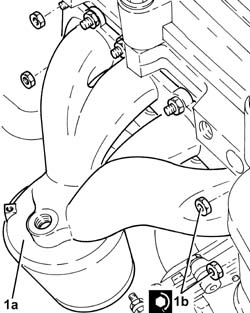
Applies to: engines: 2.2; all production periods
1. Place a new gasket in position.
2. Connect the front section of the exhaust pipe (2a), exhaust manifold side with the catalytic converter and tighten the new nuts (2b) to the recommended torque.
Component | Fastening | dia | Value (daNm) | Validity |
|---|---|---|---|---|
Rigid pipe for exhaust pipe between catalytic converter and silencer | Nut (to replace) | M8 | (exhaust manifold with catalytic converter side) 1.6 | 2.2 |
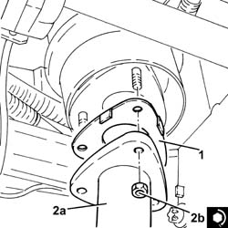
Applies to: engines: 2.2; all production periods
1. Place the heat shield (1a) in its housing and secure it using the bolts (1b).
2. Position the front Lambda sensor in its housing and tighten it to the recommended torque.
Component | Fastening | dia | Value (daNm) | Validity |
|---|---|---|---|---|
Front Lambda sensor to catalytic converter | - (with special black grease) | M18 x 1.5 | (exhaust manifold with catalytic converter side) 4.0 | 2.2 |
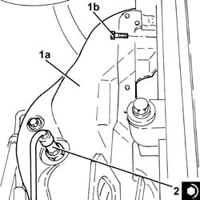
Applies to: engines: 2.2; all production periods
- Connect the electrical connection for the rear Lambda sensor to the catalytic converter.
- Connect the electrical connection for the front Lambda sensor to the catalytic converter.
- Place the sound insulation cover back in its housing and secure it to the engine using the three pins.
- Connect the negative battery terminal.
- Remove the vehicle from the lift.
Applies to: engines: 1.8; all production periods
Removing
RefittingOp. 7055B54 UNDER ENGINE PROTECTION/GUARD - R.R.
Op. 1080B95 REAR LAMBDA SENSOR TO CATALYTIC CONVERTER - R.R
Op. 1076B18 RIGID SECTION OF EXHAUST PIPE BETWEEN CATALYTIC CONVERTER AND SILENCER - R + R
Applies to: engines: 1.8; all production periods
Refitting
RemovingOp. 1076B20 REAR EXHAUST SILENCER - R + R
Op. 1076B30 FRONT EXHAUST SILENCER - R + R
Op. 1076B18 RIGID SECTION OF EXHAUST PIPE BETWEEN CATALYTIC CONVERTER AND SILENCER - R + R
Topics linked from this page (8)
- 1076B18 RIGID SECTION OF EXHAUST PIPE BETWEEN CATALYTIC CONVERTER AND SILENCER - R + R
- 1076B20 REAR EXHAUST SILENCER - R + R
- 1076B30 FRONT EXHAUST SILENCER - R + R
- 1080B95 REAR LAMBDA SENSOR TO CATALYTIC CONVERTER - R.R
- 7055B54 UNDER ENGINE PROTECTION/GUARD - R.R.
- A001 BATTERY
- K017 LAMBDA SENSOR ON CATALYZER
- K018 LAMBDA SENSOR ON CATALYZER - 2